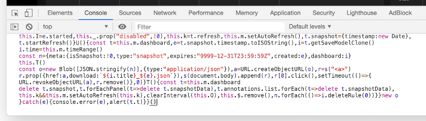
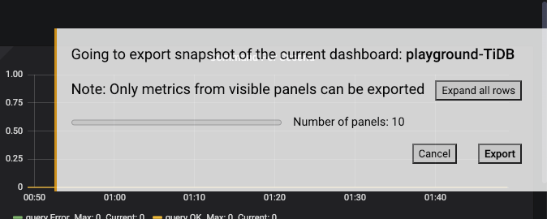

Export Grafana data as a snapshot 导出 Grafana 数据为快照 匯出 Grafana 數據為快照
Supported on Chrome, Edge and Firefox browsers 适用于 Chrome / Edge / Firefox 浏览器 適用於 Chrome / Edge / Firefox 瀏覽器
-
Copied! 已复制！ 已複制！
-
After opening a Grafana Dashboard, press F12 the launch the Developer Tool, and then paste the script in the “Console” tab. 在 Grafana 监控面板中按下 F12 启动开发者工具，在 “Console” 面板下粘贴脚本。 在 Grafana 儀表板中按下 F12 啟動開發者工具，在「Console」頁下貼上指令碼。

-
Press Enter to execute the script. A dialog should now appear on the web page. Follow its instruction to continue. 按下 回车 (Enter) 执行脚本。此时 Grafana 网页中会出现操作提示框，请遵循其指示进行后续操作。 按下 輸入 (Enter) 運行指令碼。此時 Grafana 網面中會出現操作提示框，請遵循其指示繼續操作。
